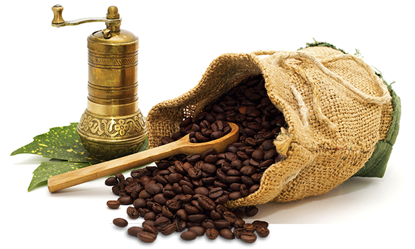
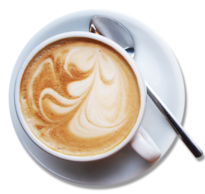

Black as the devil, hot as hell, pure as an angel, sweet as love!
Café Hungry Hobbit was launched in Dehradun India in 2016 by Vibhor Rathor, foodies on a mission to recreate real good food and coffee in a Doon style. Hungry Hobbit was also the fave hangout for friends and family. Today we continue to
recreate core classics like French Fries, Fried Rice, Manchurian, Veg Noodles and Burgers are available to enjoy... with a gorgeous cup of Coffee.


Premium Blend
It all starts with what is in the cup. Hungry Hobbit's uses only the freshest micro-roasted coffees. We are coffee people first and constantly strive to perfect our craft. We think you will appreciate our hard work. But we're not just coffee.
Hungry Hobbit's also serves fresh bakery items. We even serve fast food every day. Try our french fries for a healthy change of pace.